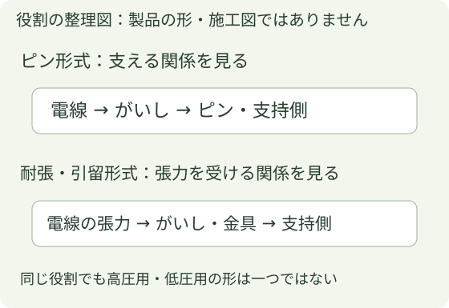

がいしから設備を見分ける基礎
この章でつかむこと
現場で「端子」と呼んでいたがいしを、正式名称・用途表示・電線を支える形で見比べます。設備種別の候補を読む学習であり、充電状態や作業可否を判断する教材ではありません。
現場の呼び方「端子」と、正式名称「がいし」を対応させて読みます。

公式写真を開いたら、同じ箇所を比べる
- まずメーカーの「高圧用／低圧用」の見出しと形式名を読みます。
- ピン形同士は、ひだ・溝・金属ピンと電線の支え方を比べます。ピンの有無だけでは決めません。
- 耐張・引留形同士は、電線の張力を受ける向き、接続金具、穴や溝を比べます。
冒頭の独自図は役割の整理です。製品の実物形状を示す図ではないため、形の識別はリンク先の公式写真と合わせて行います。
1 高圧用として示される形式
| 形式 | 公式写真で見る点 |
|---|---|
| 高圧ピンがいし | 下側の金属ピン、傘状の張出し、電線を支える側 |
| 高圧耐張がいし | 両端の接続金物、軸方向に張力を受ける構造 |
2 低圧・引込用として示される形式
| 形式 | 公式写真で見る点 |
|---|---|
| 低圧引留三角がいし | 中央の穴と三方の突起 |
| 低圧引留1号がいし | 中央穴と大きな周溝のある鼓形 |
| 低圧引留3号がいし | 縦長の本体と複数の周溝 |
| 低圧ピンがいし | 下側の金属ピン。ピンがあるだけで高圧としない |
別ページの写真Dは関西送配電規格のDV・DE線用引込がいし。長手の本体・中央の長穴・周囲の突起を確認します。公式写真A～Dと形式の説明を見る。この関西規格例を、五條・十津川の全現場の採用品とは断定していません。
3 形と相手を一緒に見る
色だけや線の本数だけでは分けず、ひだ・溝・ピン・接続金物と、どの電線をどの側で支えているかを合わせます。がいし全てに同じ形のルールがあるわけではありません。引込線にも高圧・低圧の両方があります。
この章は設備の種類を比較する基礎です。停電・電圧の有無・作業可否は外観識別と分けて確認します。設備に触れる、がいしを操作する、巻き付け方や溝を選ぶ手順は扱いません。
出典と写真
カワソーテクセル「配電（電力）用碍子」「DV・DE線用引込碍子」の用途分類・各形式名と写真を2026年10月25日に照合しました。メーカー写真はこのHTMLへ転載せず、公式ページ上で比較する構成です。独自図は役割の整理に限定しています。